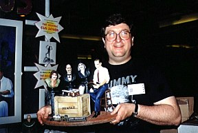
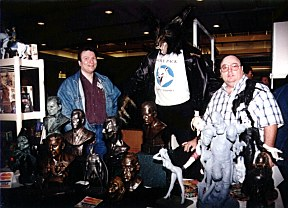
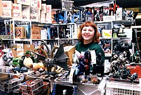
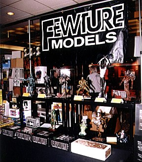

There were nearly 100 dealers including:
- Amazing Figure Modeler
- Anubis Productions
- Artomic Creations
- Astro Zombie
- Body Shop Laboratories
- Bone Clones
- Bowen Designs
- Cellar Cast
- Cine Art
- Cranky Productions
- Creature Features
- D'Angelo Productions
- Dimensional Designs
- Diorama Fantasies
- Doomsday Resin
- Fewture Models
- The Flying Gung Bros.
- G Force
- Gilliland Productions
- Golden Apple Comics
- Graphitti Designs
- Grey Zon
- Heros From Another Planet
- Hogan's Bones
- Horizon
- IDC
- Icon Fantasies
- Impact
- Inteleg
- Jackalope Productions
- Jones Bones
- Kimono My House
- Kit Kraft
- Kitbuilders Magazine
- Kotobukiya
- Legends in 3 Dimensions
- Legends Toys & Hobbies
- M-1
- Mad Lab Models
- Miniations
- Monsters & Mayhem
- Monsters in Motion
- Neo Model Tech
- Newtype Hobbies & Toys
- Oliver Productions
- Oni Shougun
- Pegasus Hobbies
- Planet Earth
- Polydata
- Skyhook Models
- Streamline Pictures
- Verotik
- Vicious Kits
- Vision Models
- Volks
- Wolf's Head Productions
- Wowchuck Productions
- Xacto-facto
- Zotz Productions
|






|

The Gremlins in the Garage webzine is a production of
Firefly Design. If you have any questions or comments please
get in touch.
Copyright © 1994-1997
Firefly Design.